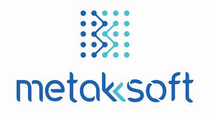

Trade Mark Journal No.2025/017 25 April 2025
UK00004186322 9 April 2025 (9,35,42,44)

- Class 9
- Health monitoring software; Education software; Computer software for education; Social software; Security software; Software; Financial management software; Computer software for use in medical decision support systems; Software reliability software; Software testing software; Educational software; Environmental monitoring software; Telecommunications software; Educational computer software; Computer software programs for database management; Machine learning software for healthcare; Computer software development tools; Downloadable computer security software; Science software; Artificial intelligence software for healthcare; Software development programs; Downloadable computer software for the management of data; Workforce management software; Business technology software; Computer software programs for spreadsheet management; Computer software for database management; Data management software; Network management computer software; Computer software programs; Communications software; Community software; Downloadable computer software for the management of information; Business management software; Computer software relating to the medical field; Business software; Media development software; Software to control building environmental, access and security systems; Computer software packages; Maintenance software; Bioinformatics software; Development environment software; System software; Computer software for document management; Computer software; Computer software for computer aided software engineering; Computer programming software; Software for computers; Computer software applications; Computer operating software; Computer software for the monitoring of computer systems; Computer application software; Computer telephony software; Computer e-commerce software; Computer whiteboard software; Downloadable computer software; Interactive computer software; Computer software platforms; Computer software [programmes]; Computer software for accessing computer networks; Computer software downloadable from global computer networks; Computer software for testing vulnerability in computers and computer networks; Recorded computer software; Computer software, recorded; Computer software downloaded from the internet; Computer application software for use with wearable computer devices; Computer software downloadable from the internet; Computer programs [downloadable software]; Computer software for use in computer access control; Computer software applications, downloadable; Downloadable computer software applications; Computer hardware; Computers and computer hardware; Computer operating system software; Software for tablet computers; Computer software for the detection of threats to computer networks; Communications processing computer software; Simulation software for use in digital computers; Computer software for accessing databases; Computer software for use in computer network access control; Operating computer software for main frame computers; Downloadable computer software for blockchain technology.
- Class 35
- Retail services for computer software; Retail services in relation to computer software; Health care cost management.
- Class 42
- Design and development of computer software for use with medical technology; Services for maintenance of computer software; Computer software maintenance services; Computer software consulting services; Software development services; Computer software design services; Services for the design of computer software; Development of computer software; Computer software development; Development and maintenance of computer software; Computer and software consultancy services; Computer software consultancy services; Software engineering services; Support and maintenance services for computer software; Computer software advisory services; Development of computer hardware and software; Development and maintenance of computer database software; Computer software programming services; Computer software maintenance; Computer software (Maintenance of -); Maintenance of computer software; Development of computer database software; Research and development of computer software; Advice and development services relating to computer software; Professional advisory services relating to computer software; Software development; Development of software; Consulting services relating to computer software; Computer software consulting; Software maintenance services; Software engineering services for data processing programs; Maintenance of computer software relating to computer security and prevention of computer risks; Software consulting services; Services for the leasing of computer software; Services for updating computer software; Design services relating to computer software; Consultancy services in relation to computer software; Computer software research; Software development in the framework of software publishing; Development services relating to computer software application solutions; Calibration services relating to computer software; Research relating to the development of computer programs and software; Development of computer software application solutions; Software research; Computer software consultancy; Consultancy (Computer software -); Computer software technical support services; Professional consultancy relating to computer software; Design and development of antivirus software; Services for designing computer software; Computer software integration; Research and consultancy services relating to computer software; Consultancy relating to the design and development of computer software programs; Design and development of computer hardware and software; Programming of telecommunications software; Computer software development for others; Maintenance of software; Advisory services relating to the use of computer software; Advisory services relating to computer software; Software as a service [SaaS] featuring computer software platforms for artificial intelligence; Development of software for communication systems; Software as a service [SaaS] featuring software platforms for electronic gaming; Services for the writing of computer software; Testing of computer software; Design and development of computer database software; Software as a service; Advisory services relating to computer software design; Consultancy and information services relating to the design, programming and maintenance of computer software; Design and development of computer software; Computer software design and development; Software engineering services for data processing; Computer software engineering; Computer software design; Software design (Computer -); Computer software (Design of -); Design of computer software; Computer software installation; Computer software (Installation of -); Installation of computer software; Configuration of computer software; Update of computer software; Updating of computer software; Software (Updating of computer -); Computer software (Updating of -); Up-dating of computer software; Leasing of computer software; Design of computer hardware and software; Computer hardware and software design; Software (Rental of computer -); Computer software rental; Computer software (Rental of -); Upgrading of computer software; Developing computer software; Design of computer database software; Computer software consultation; Computer programming and software design; Updating and design of computer software; Design of computer machine and computer software for commercial analysis and reporting; Troubleshooting of computer hardware and software problems.
- Class 44
- Health care consultancy services [medical]; Health care in the nature of health maintenance organizations; Medical health assessment services; Mental health services; Health consultancy; Health assessment services; Professional consultancy relating to health care; Rental of medical and health care equipment; Personality testing [mental health services].
METAKSOFT LIMITED